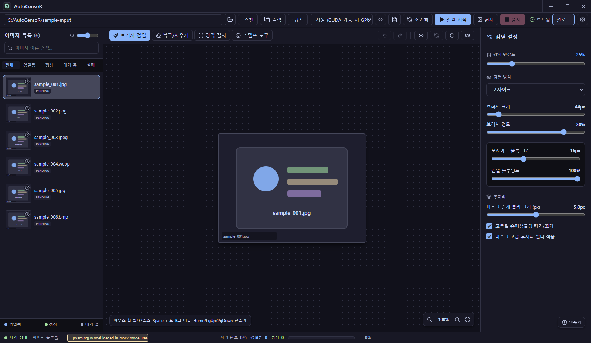
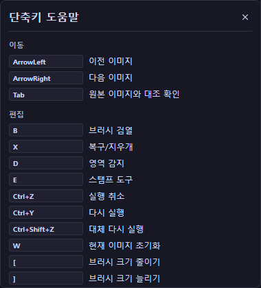
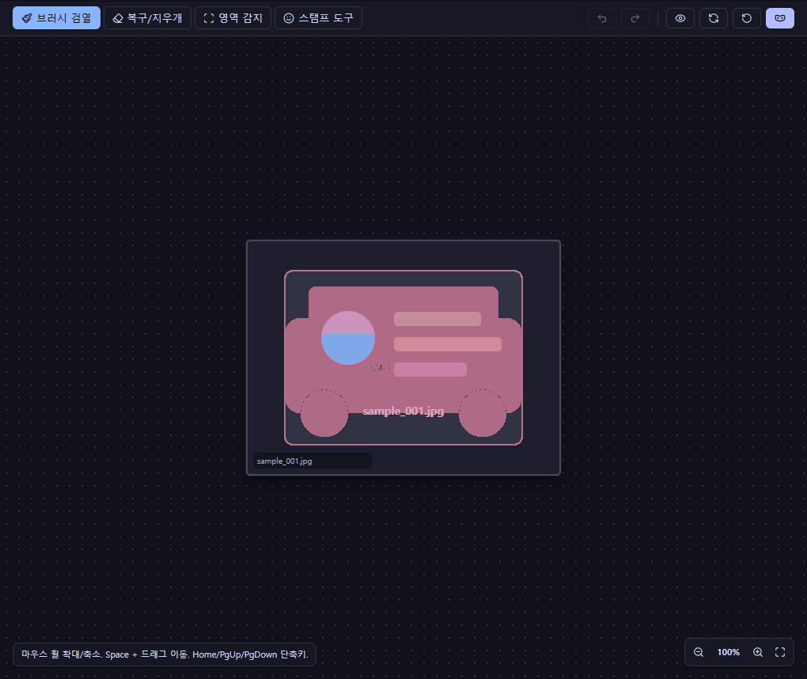
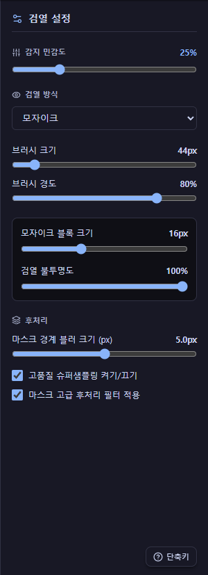
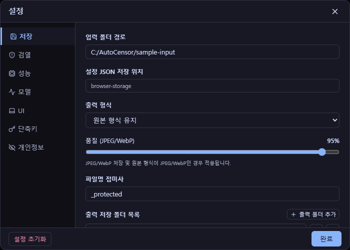

폴더는 맡겨 두고,
필요한 부분만 손보세요.
AutoCensoR는 이미지 폴더의 보호할 영역을 자동으로 찾고, 필요한 부분만 사람이 빠르게 다듬습니다.
상업적 도입, 유료 배포, 제품/서비스 번들 문의는 메일로 연락해 주세요.

왜 만들었나요?
이미지 폴더를 통째로 정리할 때 매번 같은 곳을 손으로 가리는 게 번거로웠어요. 그래서 “자동이 먼저 훑고, 사람은 마무리만” 하도록 만들었습니다. 완벽하진 않지만, 실제로 매일 쓰면서 다듬고 있어요.
작업 흐름
빈 화면에서 보정까지, 단계별로 따라와요
아래 화면은 단계별 작업 흐름 미리보기예요. 단계를 누르면 화면·설명·포인트가 함께 바뀌어요.
모델 로드
불러오기 전과 후, 직접 눌러 보세요
로드 전에는 자동 감지가 동작하지 않아요. 로드 후에 일괄 처리가 가능해져요.
보호 방식
같은 영역, 마음에 드는 방식으로
단색·흑백·블러·모자이크를 같은 보호 영역에 적용해요. 방식을 바꿔도 감지 범위나 영역 크기는 그대로예요.
🧪 예시 이미지예요 · 실제 앱 화면은 아니에요
- ▩모자이크블록 크기·불투명도로 강도를 정해요.
- ◐블러경계를 부드럽게 가려요.
- ▣흑백형태는 남기고 색만 빼요.
- ■단색완전히 덮어서 가장 강하게.
감지 민감도 · 보호 방식과는 달라요
민감도는 “후보를 얼마나 넓게 잡을지”예요
값이 낮을수록(예: 0.01) 더 민감하게, 더 넓게 후보를 잡아요. 값이 높을수록 확실한 후보만 남아요.
📐 감지 단계의 후보 영역 설명 그림이에요
처음에는 0.20에서 0.50 사이로 시작해 보세요. 좋은 값은 모델과 이미지에 따라 달라지니, 결과를 보며 천천히 맞추면 돼요.
전후 비교
손잡이를 끌어 비교해 보세요
왼쪽은 원본, 오른쪽은 보호 적용 결과예요. 가운데 선을 끌거나 ←/→ 키로 비교할 수 있어요.
🧪 예시 이미지예요 · 실제 앱 화면은 아니에요
도구 · 단축키
손이 필요한 곳에만 쓰는 도구
아래 화면과 단축키는 실제 앱 기준이에요.
- B브러시 검열원하는 영역을 직접 칠해 가려요.
- X복구/지우개과하게 가린 곳을 되돌려요.
- D영역 감지오른쪽 버튼으로 드래그한 영역을 한 번에.
- E스탬프 도구반복 보정을 빠르게 찍어 적용.


설정 · 저장
저장은 흐름을 따라 자동으로
처리와 보정 결과는 작업하는 동안 자동으로 적용·저장돼요. 출력 폴더에 접미사를 붙여 저장되고, 따로 수동 저장을 누를 필요는 없어요.


궁금한 건 댓글로 물어봐 주세요
질문, 버그 제보, 개선 제안은 Tistory 댓글로 남겨 주세요. 공개 댓글에는 개인 경로, 계정 정보, 민감한 이미지를 올리지 말아 주세요. 특정 이미지가 제대로 감지되지 않는 경우에는 화면 캡처와 실제 실패 이미지를 메일로 보내 주세요.